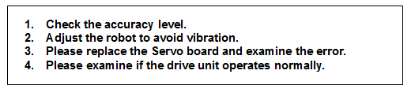
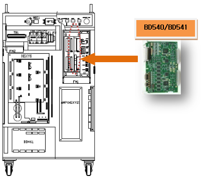

1.1.23.1. Outline
After a certain time has elapsed, with all location commands sent to the servo, the robot is still in an inaccurate level as recorded in the step. This error occurs if the accuracy level is too small or vibration occurs with the robot.
1.1.23.2. Causes and checking methods

1. Check the accuracy level.
Check the accuracy level recorded in the step and select System> 3: Robot Parameter > 8: Accuracy in the manual mode.
If the accuracy is 0 for the step in which the problem occurred, increase the bit and distance of Level 0 into a level allowed for the operation.
2. Adjust the robot to avoid vibration.
If vibration remains at the tip of the robot tool in the stationary state and Accuracy OK still does not appear, adjust the robot to avoid vibration at the tip.
Enter the engineer code "R314" and select System> 3: Robot Parameter > 12: Servo Parameter Setting>1: Servo Loop Gain in the manual mode.
If the vibration occurs at the tip of robot tool, increase F1 and F2 of servo parameters with the same ratio for all axes. For instance, to increase by 20% with F1=500 and F2=160 as above, change them to F1=600 and F2=192 for all axes.
The cycle time will be delayed as F1 and F2 are increased, but controlling the vibration is required. If F1 and F2 aren't set to the same values, the tip of the robot tool may not be in a straight trajectory so pay attention.
3. Replace the Servo board and examine the error.
After the replacement of the Servo board, if the error does not persist, the Servo board is faulty. Please replace the Servo board with a new one.

4. Examine if the drive unit operates normally.
Please check if the drive unit of the corresponding axis (motor, decelerator) works properly.